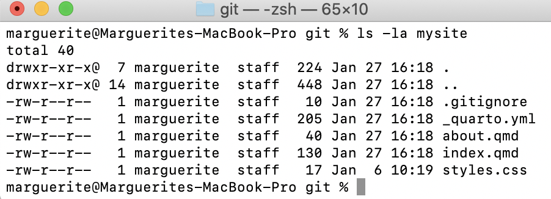
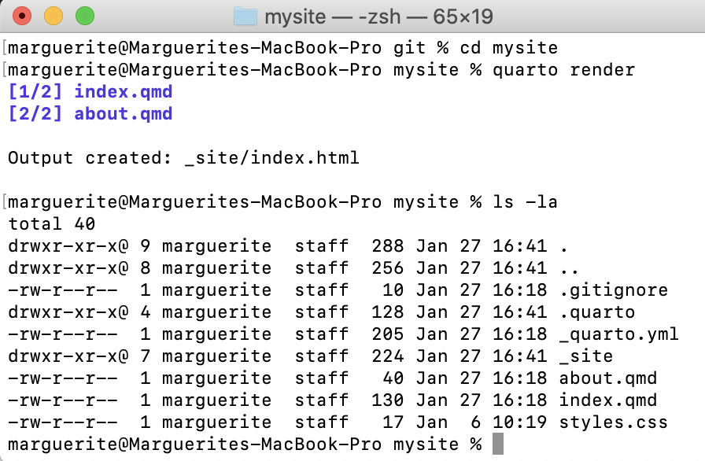

Pre-lecture materials
INSTALL
Before class, you can prepare by installing the following materials:
- Install
quartohttps://quarto.org/docs/get-started/ - Install
tinytex, a version of \(\LaTeX\) to render output. Open a Terminal window (git-BASHon Windows) and type:
Terminal
quarto install tinytexNote: This will not add tinytex to the system PATH so if you would like to use tinytex with other applications, or you have a different installation of TeX that you prefer to use instead with quarto, see notes here https://quarto.org/docs/output-formats/pdf-engine.html.
- Install
pandoc, which translates output to almost any format. https://pandoc.org/installing.html Follow instructions for whichever installer you prefer. If you are using homebrew on a mac:
Terminal
brew install pandoc- Install
rmarkdown(“R Markdown), whichquartobuilds upon.rmarkdownalso includes the packageknitrwhich executes the R code and provides \(\LaTeX\) formatting for the output. From within your R console:
R_Console
install.packages("rmarkdown")
Read ahead
Before class, you can prepare by reading the following materials:
- Creating a Website in Quarto quickstart up to and including Render https://quarto.org/docs/websites/
- Publishing to GitHub up to and including Render to docs https://quarto.org/docs/publishing/github-pages.html
Acknowledgements
Material for this lecture was borrowed and adopted from
Learning objectives
Learning objectives
At the end of this lesson you will:
- Be able to define literate programming
- Know how to use R plus a text editor or Rstudio to practice literate programming
- Create a Quarto markdown document
Literate Programming
Before there was widespread concern about “Reproducible Research”, the term literate programming was coined by Donald Knuth, one of the true geniuses of computing, the author/inventor of \(\TeX\), and the notion of structured programming, among other things. He wrote a book about it in 1984!
Literate programming is a methodology that combines a programming language with a documentation language, thereby making programs more robust, more portable, more easily maintained, and arguably more fun to write than programs that are written only in a high-level language.
The main idea is to treat a program as a piece of literature, addressed to human beings rather than to a computer. The program is also viewed as a hypertext document, rather like the World Wide Web. (Indeed, I used the word WEB for this purpose long before CERN grabbed it!) —Donald Knuth
The basic idea is that:
- Programs are useless without descriptions.
- Descriptions should be literate, not comments in code or typical reference manuals.
- The code in the descriptions should work. Thus it is necessary to extract the real working code from the literary description.
These concepts were baked into the R help pages. You will see that there are working code examples for every single function in R at the bottom of each help page. In fact it is required before a package will be published on CRAN.
Additional Reading
- Knuthʻs Webpage about his book on Literate Programming
The Data Science Pipeline
The basic issue is when you read a description of a data analysis, such as in an article or a technical report, for the most part, what you get is the report and nothing else.
Of course, everyone knows that behind the scenes there’s a lot that went into this article and that is what I call the data science pipeline.

Literate Programming in Practice
One basic idea to make writing reproducible reports easier is what’s known as literate statistical programming. The idea is to think of a report or a publication as a stream of text and code.
The code and text remain together in a single source document. No more separate analysis files and word processing files. When code is edited, the report is automatically generated and updated.
The text is readable by people and the code is readable by computers. It is actually a human-readable document that executes the entire analysis.
Well Documented: The analysis is described in a series of text and code chunks.
Modular: Each kind of code chunk will do something like load some data or compute some results.
Readable: Each text chunk will relay something in a human readable language.
There might also be a separation of raw data and processed data. To preserve the integrity of the raw data as it was collected or received, as well as a record of the data cleaning to produce processed data.
There might also be presentation code that formats tables and figures and there’s article text that explains what’s going on around all this code. This stream of text and code is a literate statistical program or a literate statistical analysis. All of the tools we describe here are open source projects.
Weaving and Tangling
Literate programs by themselves are a bit difficult to work with, but they can be processed in two important ways.
Literate programs can be weaved to produce human readable documents like PDFs or HTML web pages, and they can tangled to produce machine readable code. To do this we need a documentation language.
Sweave and \(\LaTeX\)
The first literate programming system for R is called Sweave. sweave enables users to combine R code with a typesetting language called \(\LaTeX\).
\(\LaTeX\) markup specifies how the text, mathematical equations, tables, and figures will be formatted, allowing the separation of content from formatting (as opposed to WYSYWIG word processors like Word or Google Docs).
\(\LaTeX\) is very powerful for:
- Laying out mathematical equations. This is its superpower!
- Fine-tuned control of formatting (all kinds!)
- Powerful tools for integrating citations via BibTEX and cross-references to Figures, Tables, Equations, Sections, anything you wish to label.
\(\LaTeX\) was written by Leslie Lamport when he was at the Stanford Research Institute, as a set of macros for \(\TeX\), which is the underlying typesetting engine written by Donald Knuth. Lamport wanted to write a book using \(\TeX\), so he wrote the \(\LaTeX\) macros and a manual, which made it easier for many others to use \(\TeX\).
Before sweave, one would write code to perform statistical analysis or modeling in R, and the manuscript in latex once the coding was complete. As projects develop, however, keeping these processes separate can lead to a lack of reproducibility.
sweave revolutionized coding, and has become part of the R base code. sweave was written by Friedrich Leisch, who is on the R Core Development Team and the BioConductor Project. To see an example of LaTeX see [small2e.tex] and for Sweave, check out [Little_Sweave.Rnw].
Sweave files have a .Rnw file ending and have R code weaved through the document, interspered with :
<<plot1, height=4, width=5, eval=FALSE>>=
data(airquality)
plot(airquality$Ozone ~ airquality$Wind)
@Once you have created your .Rnw file containing code chunks for your R code, and \(\LaTeX\) tags to format your text, from your R console you run the sweave() function to weave the file, executing the R chunks and replacing them with output as appropriate to typeset before creating the PDF document.
Sweaveʻs main limitation is that it requires knowledge of \(\LaTeX\), which has a steep learning curve.
- Sweave also lacks a lot of features that people find useful like caching, and multiple plots per page and mixing programming languages.
- For developers, Sweave is hard to extend with new functions.
Inspired by Sweave, Yihui Xie wrote knitr to extend literate programming capabilities in R even further by combining features of other add on packages into one package. It adds richer graphics features and importantly extends use of much simpler Markdown documents to take advantage of LaTeX without having to write it!
rmarkdown
Markdown is a much simpler document language. A markdown file is a plain text file that is typically given the extension .md. The rmarkdown R package takes a R Markdown file (.Rmd) and weaves together R code chunks Figure 1, which can be output in a variety of different possible formats.

R chunks surrounded by text looks like this:
```{r plot1, height=4, width=5, eval=FALSE, echo=TRUE}
data(airquality)
plot(airquality$Ozone ~ airquality$Wind)
```
Tip
The best resource for learning about R Markdown this the book by Yihui Xie, J. J. Allaire, and Garrett Grolemund:
The R Markdown Cookbook by Yihui Xie, Christophe Dervieux, and Emily Riederer is really good too:
The authors describe the motivation for the 2nd book as:
“However, we have received comments from our readers and publisher that it would be beneficial to provide more practical and relatively short examples to show the interesting and useful usage of R Markdown, because it can be daunting to find out how to achieve a certain task from the aforementioned reference book (put another way, that book is too dry to read). As a result, this cookbook was born.”
Because this is lecture is built using a .qmd file (which is very similar to a .Rmd file), let’s demonstrate how this works. I am going to change eval=FALSE to eval=TRUE.
Questions
- Why do we not see the back ticks ``` anymore in the code chunk above that made the plot?
- What do you think we should do if we want to have the code executed, but we want to hide the code that made it?
Before we leave this section, I find that there is quite a bit of terminology to understand the magic behind rmarkdown that can be confusing, so let’s break it down:
-
Pandoc. Pandoc is a command line tool with no GUI that converts documents (e.g. from number of different markup formats to many other formats, such as .doc, .pdf etc). It is completely independent from R (but does come bundled with RStudio). If you donʻt have Rstudio installed, you will have to install
pandoc. -
Markdown (markup language). Markdown is a lightweight markup language with plain text formatting syntax designed so that it can be converted to HTML and many other formats. A markdown file is a plain text file that is typically given the extension
.md.It is completely independent from R. - R Markdown (markup language). R Markdown is an extension of the markdown syntax for weaving together text with R code. R Markdown files are plain text files that typically have the file extension
.Rmd. -
rmarkdown(R package). The R packagermarkdownis a library that uses pandoc to process and convert text and R code written in.Rmdfiles into a number of different formats. This core function isrmarkdown::render(). Note: this package only deals with the markdown language. If the input file is e.g..Rhtmlor.Rnw, then you need to useknitrprior to calling pandoc (see below).
Tip
Check out the R Markdown Quick Tour for more:

knitr
One of the alternative that has come up in recent times is something called knitr.
- The
knitrpackage for R takes a lot of these ideas of literate programming and updates and improves upon them. -
knitrstill uses R as its programming language, but it allows you to mix other programming languages in. -
knitris included in the installation ofrmarkdown. - You can also use a variety of documentation languages now, such as \(\LaTeX\) , markdown and HTML.
-
knitrwas developed by Yihui Xie while he was a graduate student at Iowa State and it has become a very popular package for writing literate statistical programs.
Knitr takes a plain text document with embedded code, executes the code and ‘knits’ the results back into the document.
For for example, it converts
- An R Markdown (
.Rmd)file into a standard markdown file (.md) - An
.Rnw(Sweave) file into to.texformat. - An
.Rhtmlfile into to.html.
The core function is knitr::knit() and by default this will look at the input document and try and guess what type it is e.g. Rnw, Rmd etc.
This core function performs three roles:
- A source parser, which looks at the input document and detects which parts are code that the user wants to be evaluated.
- A code evaluator, which evaluates this code
- An output renderer, which writes the results of evaluation back to the document in a format which is interpretable by the raw output type. For instance, if the input file is an
.Rmd, the output render marks up the output of code evaluation in.mdformat.

[Source]
As seen in the figure above, from there pandoc is used to convert e.g. a .md file into many other types of file formats into a .html, etc.
So in summary:
“R Markdown stands on the shoulders of knitr and Pandoc. The former executes the computer code embedded in Markdown, and converts R Markdown to Markdown. The latter renders Markdown to the output format you want (such as PDF, HTML, Word, and so on).”
[Source]
In comes Quarto
The folks who developed R Markdown have moved on to a new package called Quarto. Quarto contains many of the features of R Markdown, but importantly, is now separate from Rstudio. It is intentionally developed as a cross-platform, cross-language markup language. It works with R, Python, Julia, and Observable. And is rapidly catching on with the statistical coding community.
Quarto can render output to many formats of documents including html, pdf, docx, md. It can also layout websites, presentations, or even books. It supports interactive apps such as Rshiny among other things.
We are going to learn using Quarto. Letʻs start by getting a simple webpage up. Conceptually, there are three tasks:
- Create your quarto website on your computer
- Make your website folder into a GitHub repo
- Publish your website via GitHub
Create your website locally with Quarto
In this section, I am adding a bit more explanation to the Quarto quickstart guide up to and including Render. If something is not clear, please consult https://quarto.org/docs/websites/
There are three main quarto commands we will use:
-
quarto create-project: Make a website project template -
quarto preview: Take a look at what the webite will look like -
quarto render: Render yourqmdtohtml
Make your website directory and template
Create your website (here called mysite) using the following command. It will make a directory of the same name and put the website contents within it.
Terminal
quarto create-project mysite --type websiteYou should now see the following files in your mysite directory (Figure 2):

This is the bare-bones version of your website. Check that the code is functional by looking at a preview:
Terminal
quarto previewThis should open up a browser window showing a temporary file made by quarto by rendering your website files.
Tip
-
quarto previewwill refresh the preview every time you save yourindex.qmd(or any) website files. So itʻs a good idea to keep the preview open as you make edits and saves. - Check every edit, it is easier to debug in small steps.
- Terminate
quarto previewwithControl-c
Render your website to html
Use quarto to render your content to html, the format used by browsers. First navigate into your website directory then render:
Terminal
cd mysite
quarto renderTake a look at the mysite contents after rendering, you should see a new directory _site (Figure 3). The html was rendered and put in there (go ahead, open up the files and check it out):

Personalize your content
What is really nice is that you can personalize your website by simply editing the quarto markdown and yaml files.
Web content goes in .qmd
Using any text editor, edit the index.qmd to personalize your website.
The first section of your index.qmd is the header. You can change the title and add additional header information, including any cover images and website templates.
For example this is what I have in my course website index.qmd header. Note that my cover image is in a folder called images within at the top level of my website directory. If you want to try this out substitute or remove the image line and change the twitter/github handles.
index.qmd
---
title: "Welcome to Introduction to Data Science in R for Biologists!"
image: images/mycoolimage.png
about:
template: jolla
links:
- icon: twitter
text: Twitter
href: https://twitter.com/mbutler808
- icon: github
text: Github
href: https://github.com/mbutler808
---You should edit the body of your website as well. You simply edit the text.
The quarto markdown page has great examples showing how to format your content. Take a look at how to specify header sizes, lists, figures and tables. You might want to bookmark this page!
Try editing the about.qmd file as well. You will notice that this is another tab in your website. YOu can add more tabs by adding .qmd files.
With each addition, be sure to quarto preview your changes to make sure it works. When you are satisfied with your website, quarto render to render to html.
Tip
- When editing markdown, take care to note spaces and indents as they are interpreted for formatting.
- Indentations are really important for formatting lists.
- For example in a hyperlink, there is no space between the square brackets and parentheses.
[This is a cool link](http://mycoollink.com)
Website-wide settings go in _quarto.yml
All Quarto projects include a _quarto.yml configuration file that sets the global options that apply across the entire website.
YAML started off as “Yet Another Markup Language” 😜. It is clean, clear, and widely used. You can edit your YAML to add options or change the format of your website. Take a look at your _quarto.yml.
Here is an example for a simple website. title: is the parameter to set the websiteʻs title. navbar: sets the menu, in this case on the left sidebar. By default tabs will be named based on the names of the .qmd files, but you can set them manually. There are many themes you can choose from too, check them out. For something different try cyborg.
_quarto.yml
project:
type: website
website:
title: "today"
navbar:
left:
- href: index.qmd
text: Home
- about.qmd
format:
html:
theme: minty
css: styles.css
toc: trueAgain, after saving your edits, quarto preview to see the effects. When you are satisfied with your website, quarto render to render to html.
Terminal
quarto renderPublishing your website to GitHub
You can publish your website for free on GitHub, which is a very cool feature. In his section I am adding a bit more explanation to the Quarto quickstart guide up to and including Render to docs https://quarto.org/docs/publishing/github-pages.html. I describe the most important stpes below:
- Render your html to a
docsdirectory - Supress GitHub
jekyllhtml processing by creating a.nojekyllfile - Make your website directory into a repo, and link it to a GitHub repo
- Edit the GitHub repo settings to publish your website
Render your html to docs
Edit the _quarto.yml file at the top level of your website to send output to docs. This will also create the docs folder.
_quarto.yml
project:
type: website
output-dir: docsThe next time you quarto render it will create docs and all of its contents.
Supress GitHub jekyll html processing
GitHub uses a sofware called jekyll to render html from markdown. Since weʻre using quarto, we want to supress that. Create an empty file named .nojekyll at the top level of your website directory to supress default jekyll processing.
| Mac/Linux/ Git-bash | Terminal |
| Windows | CMD |
Setup a GitHub repo for your website
- Turn your website directory into a git repo:
Terminal
git init
git add .
git commit -m "first commit"- Create a GitHub repo by the same name
For example, mine might be github.com/mbutler808/mysite.
- Link your local repo and GitHub repo together
If you forgot how to do this, go back here
- Check your GitHub repo. Are your files there?
GitHub settings to serve your webpage
Almost there! A couple more steps.
From your GitHub repo, click on Settings in the top menu, and Pages on the left menu.
Your website should deploy from branch. Under Select branch choose main and under Select folder choose docs.
After clicking save GitHub will trigger a deployment of your website. After a few minutes, your URL will appear near the top at Your site is live at...:

Congratulations! ⚡️ Your website is now live 🎉🎊😍
Now make more changes!
The Quarto Workflow is
- Edit the content in .qmd
- From the Command line:
-
quarto previewto check that edits are correct -
quarto renderto render.qmdto.html git add .git commit -m "message"git push origin main
-
- Check your website (this may take a beat)
For fun
You can have fun with emoji! Guangchuang Yu wrote the package emojifont (this is the same person who wrote the widely used ggtree package) and now you can bring your emoji out of your phone and into your quarto documents! Install the R package emojifont:
install.packages("emojifont")Then anywhere you want an emoji in the markdown file, you just type:
`r emojifont::emoji('palm_tree')`🌴
Or if you want several, just line them up:
`r emojifont::emoji('balloon')``r emojifont::emoji('tada')``r emojifont::emoji('smiley')`🎈🎉😃
There is a handy cheat sheet of emoji names here https://gist.github.com/rxaviers/7360908
Final tips
Tip
-
Always always
quarto renderbefore you push up your changes to GitHub! - If your changes are not appearing, try
quarto previewand check that your changes appear in the preview. Thenquarto renderbefore you use git to add, commit, and push - Note: It can take a few minutes to render on GitHub before your changes appear on your website
Please see Stephanie Hicksʻ lecture for more literate programming examples and tips.
Post-lecture materials
Final Questions
Here are some post-lecture questions to help you think about the material discussed.
Questions
What is literate programming?
What was the first literate statistical programming tool to weave together a statistical language (R) with a markup language (LaTeX)?
What is
knitrand how is different than other literate statistical programming tools?Where can you find a list of other commands that help make your code writing more efficient when using Quarto?
Additional Resources
Tip
- Literate statistical practice)
- The introduction of Sweave by Friedrich Leisch in 2001 pg. 28
- RMarkdown Tips and Tricks by Indrajeet Patil
- https://bookdown.org/yihui/rmarkdown
- https://bookdown.org/yihui/rmarkdown-cookbook